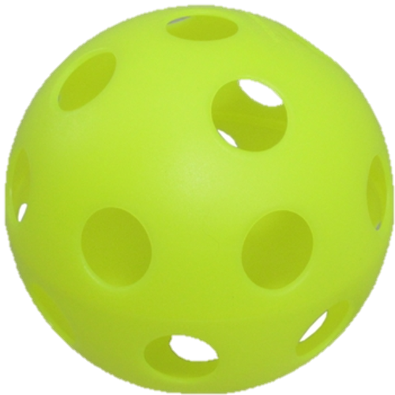
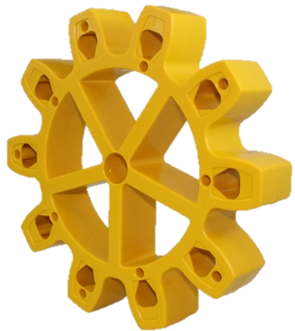

<button class="leftArrow small" ui-sref="team_picker" ng-init="initAuto()"><</button>
<div class="header" ng-class="get_match_team_color();">{{get_match_string()}}</div>
<div class="center page-title">
    <h3>Autonomous</h3>
</div>
<div class="content">

    <p class="comments-types">Movement</p>
    <label><input type="radio" name="movement" ng-click="triedAndFailed=0;crosedBaseline=0;" checked />Nothing</label>
    <label><input type="radio" name="movement" ng-click="triedAndFailed=1;crosedBaseline=0;" />Failed</label>
    <label><input type="radio" name="movement" ng-click="triedAndFailed=0;crosedBaseline=1;" />Crossed</label>
    
    <p class="comments-types"> Fuel</p>
    <label>Fuel Points: {{estimatedPoints}}<br /><button ng-click="estimatedPoints=inc_counter(estimatedPoints, 1)" class="small">+1</button><button ng-click="estimatedPoints=inc_counter(estimatedPoints, 5)" class="small">+5</button><button ng-click="estimatedPoints=dec_counter(estimatedPoints, 5)" class="small">-5</button><button ng-click="estimatedPoints=dec_counter(estimatedPoints, 1)" class="small">-1</button></label>

    <p class="comments-types"> Gears</p>
    <label><input type="radio" name="gears" ng-click="succeessfullyPlantedGears=0;missedGears=0;" checked />Nothing</label>
    <label><input type="radio" name="gears" ng-click="succeessfullyPlantedGears=0;missedGears=1;" />Missed</label>
    <label><input type="radio" name="gears" ng-click="succeessfullyPlantedGears=1;missedGears=0;" />Planted</label>

</div>

<div class="center">
    <button ng-click="updateAuto(triedAndFailed,crosedBaseline,estimatedPoints,succeessfullyPlantedGears,missedGears); " ui-sref="teleop" autoscroll="false">Continue</button>
</div>